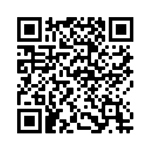

Welche Software-Hürden sind z.B. bei der Arbeit mit digitalen Editionen in NLS zu meistern?
Wie schreiben sich eurozentristische Sichtweisen hinsichtlich Schriftlichkeit, Medialität, Überlieferungs- und Archivierungspraxis in archivalischen und technischen Infrastrukturen für die Forschung an deutschsprachigen Universitäten- und Forschungseinrichtungen im allgemeinen und für Digital Humanities im besonderen zB anhand von vorgehaltenen DH-Tools oder der Akkumulierung von DH-Infrastrukturen im “Globalen Norden” fest?
Wo steht die “disrupting digital monolingualism” (King’s College 2020) Bewegung derzeit, welche Herausforderungen bestehen im Community Building?
... und vieles mehr.
Ab dem 18. Juni 2022, 14 Uhr (c.t.)
im ersten Drop-In des MLDH Labs.
Für Forschende, Lehrende, Studierende, Forschungssoftwareentwickler*innen, Bibliothekar*innen und all denjenigen Mitglieder der Freien Universität Berlin, die in ihrer Arbeit auf die Nutzung von multilingualen digitalen Tools (Plattformen, Software…) und insbesondere auf die Verwendung nicht-lateinischer Schriften in digitalen Umgebungen angewiesen sind.
Jour Fixe: Jeder zweite Dienstag 14-15 Uhr (s.t.)
Weitere Veranstaltungsformate (Drop-Ins, OpenSpaces, Co-Working, Community Hours, Hackathons, ...) sind in Planung.
Online und bald auch wieder in Präsenz.
In dem Sinne:
Und vielen Dank.
https://www.ada.fu-berlin.de/ada-labs/multilingual-dh/index.html
